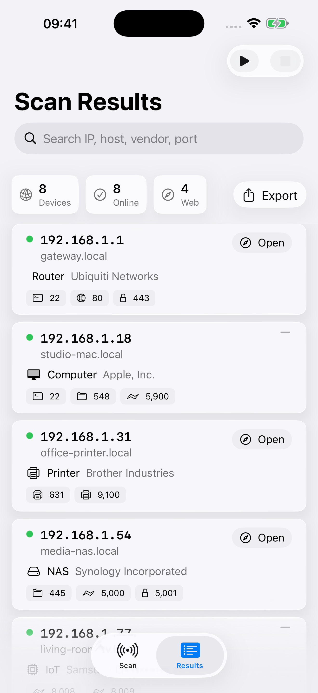
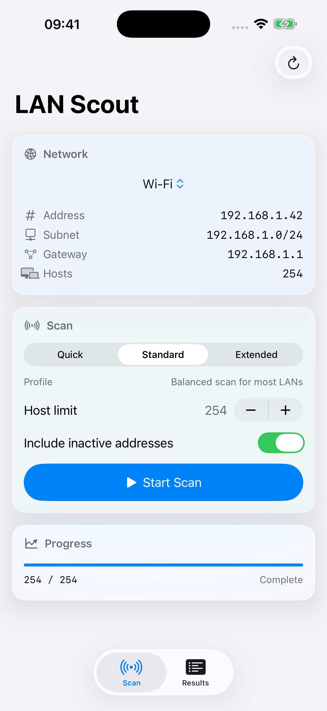
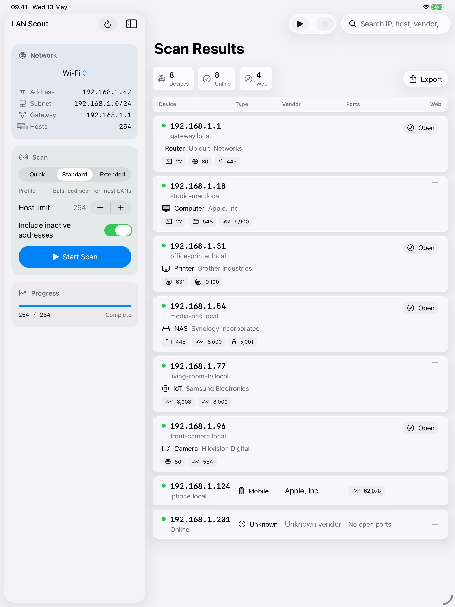

Current subnet by default
Start with the network you are already connected to, including subnet and gateway context where the platform exposes it.
Native LAN scanning
LAN Scout finds active IP addresses, open services, likely device types, web management links, and export-ready scan results from your iPhone, iPad, or Mac.


Start with the network you are already connected to, including subnet and gateway context where the platform exposes it.
Highlight common services and turn likely web management endpoints into direct browser links.
Use hostnames, Bonjour services, MAC vendors where available, and open ports to make scan results easier to read.
Create CSV or formatted Excel files with scan details and clickable device links for troubleshooting notes.
Built for practical checks
